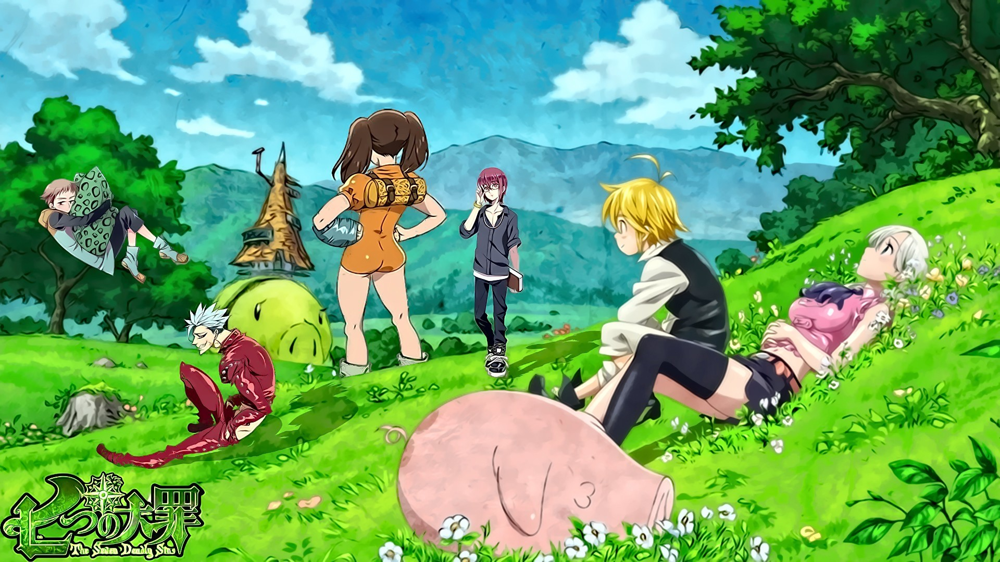

Nanatsu No Taizai
Nanatsu No Taizai is a popular Japanese manga series written and illustrated by Nakaba Suzuki. The series follows the adventures of a group of knights known as the Seven Deadly Sins, who were disbanded after being accused of plotting to overthrow the Liones Kingdom.
The story revolves around their journey to clear their names and protect the kingdom from powerful adversaries. With its captivating storyline and well-developed characters, Nanatsu No Taizai has gained a large fanbase worldwide.